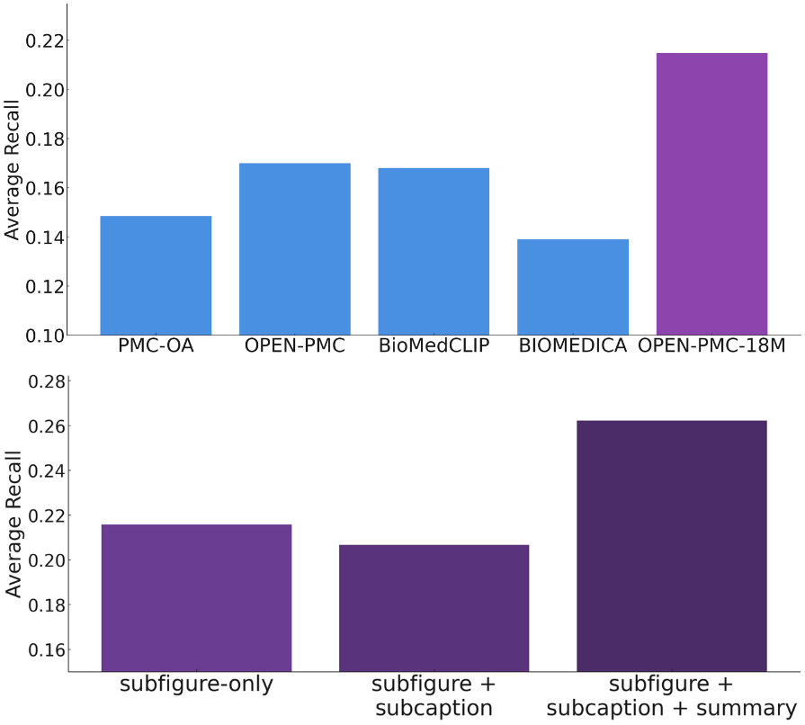
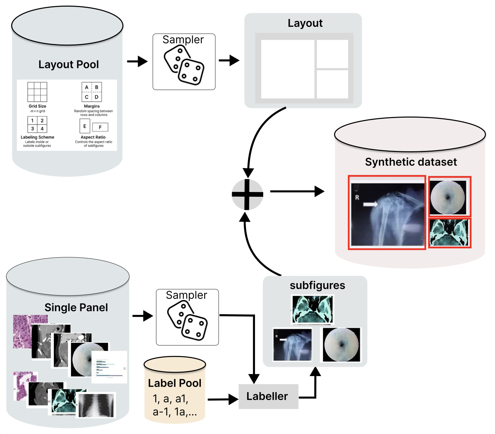
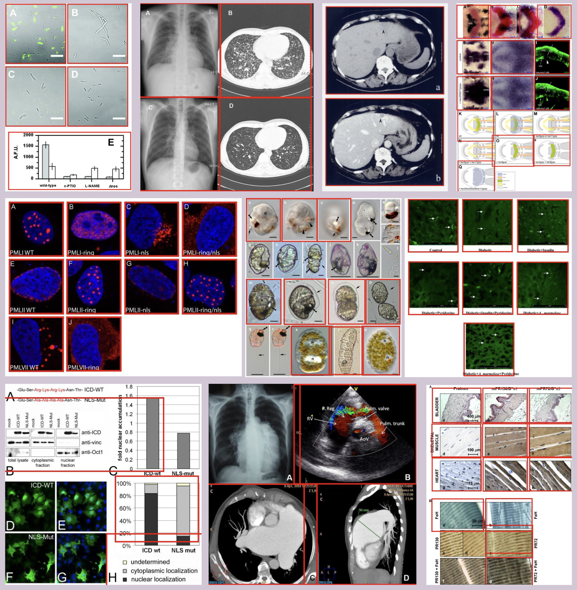

How the dataset is built
Cutting compound figures into panels that actually match the caption
A typical PubMed Central figure is a compound panel: a CT scan beside a histology slide beside a chart, all sharing one caption. Pairing that whole figure with the caption is the misalignment most medical datasets bake in. Open-PMC-18M removes it by decomposing figures into their panels first, then pairing and filtering.
Concretely, we start from 6M PMC compound figures (PMC-6M), run a transformer detector that cuts them into roughly 32M single panels, and keep the 18M panels a relevance classifier judges clinically meaningful, each now aligned to the caption text that describes it.

A worked example: one compound figure, end to end

Caption (shared, illustrative). (A) Axial CT of the abdomen. (B) H&E-stained histology of the resected mass. (C) Dermoscopic view of the associated skin lesion.
One caption describes a CT panel, a histology panel, and a dermoscopy panel. Pairing the whole figure with this caption forces the model to align three unrelated images with one text, which is the noise Open-PMC removes.
Running the detector on the figure above returns three bounding boxes, one per panel. Each dashed box below is a cropped-out panel, tagged with the modality it belongs to:
What's inside Open-PMC-18M

The final dataset is dominated by pathology and microscopy, with radiology and visible-light photography making up the rest, and captions that are often long and detailed.
- Pathology & microscopy 73%
- Radiology 18%
- Visible-light photography 8%
Captions average 165.8 tokens; 19.5% exceed 256 tokens, up to a maximum of 7,352.
How the detector works: DAB-DETR
Step 2 above is the technical core. To train a panel detector at scale we need labeled compound figures, but annotated ones are scarce. So we compose synthetic compound figures from single-panel images, which hands us exact ground-truth boxes for free, then train on 500K of them.
- Randomized grid layouts, from standard m×n to custom arrangements
- Varied panel margins and aspect ratios
- Label schemes 1, a, a1, a-1, placed inside or outside panels
- Exact ground-truth boxes recorded for every panel

Classical splitters rely on whitespace, edges, or layout heuristics and break on irregular panels. Instead we frame extraction as object detection: given a compound figure, predict a bounding box around every subpanel. We use DAB-DETR (Dynamic Anchor Box DETR), a transformer detector whose queries are explicit 4-D anchor boxes (x, y, w, h) refined layer by layer. Anchoring queries to real boxes gives sharper localization and faster convergence than vanilla DETR, which matters for the tight, non-uniform layouts of published figures.
Annotated compound figures are scarce; prior work trained on just 2,069 hand-labeled MedICaT figures. We reverse the problem: instead of decomposing figures, we compose them. A generator samples single-panel images, arranges them on randomized grids with varied margins, label schemes (1, a, a1, a-1), and aspect ratios, and records exact ground-truth boxes for free. Trained on 500,000 such figures, the detector hits 98.6% mAP on held-out synthetic data and beats the MedICaT model on real ImageCLEF 2016 figures (36.9 vs 28.2 mAP).
